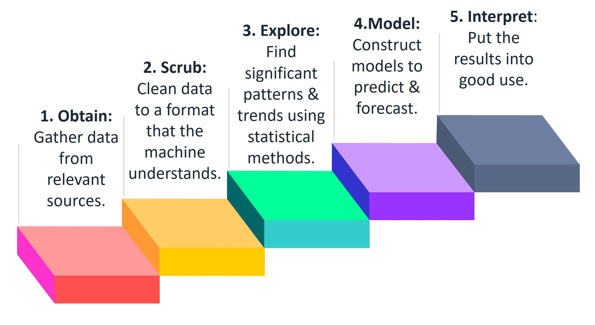

About Web scraping
Initial thoughts on web scraping as a work would be trivial, easy, and unimportant. However, I have realised through my internship at Multiverse that it is one of the most important steps in the Data science pipeline which most of us turn a blind eye to. Web scraping provides a solution for those who want to get access to structured web data in an automated fashion. It is extracting information and data from a website, transforming the information on a webpage into structured data for further analysis.
Structured data is of paramount importance when it comes to data analytics but more than 70% of data present online is unstructured and hence is of little use. However, Web scraping allows us to “legally” collect information from thousands of websites and structure the data into desirable format which eases further steps of the Data science pipeline.
